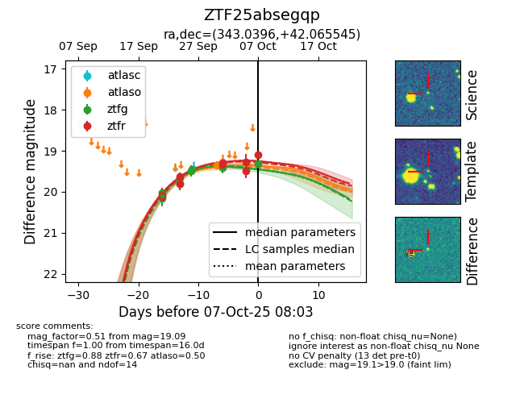
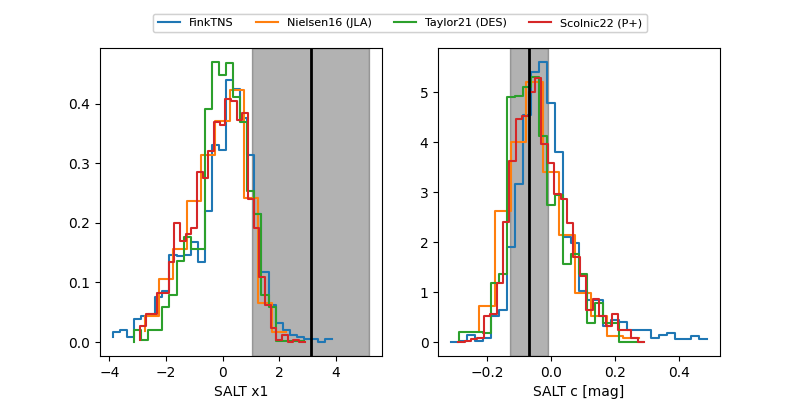

FINK: ZTF25absegqp
Lasair: ZTF25absegqp
ALeRCE: ZTF25absegqp
ZTF25absegqp (ztf,fink)
equatorial (ra, dec) = (343.0396,+42.06555)
galactic (l, b) = (100.4028,-15.52899)


last atlaso=19.36, ztfg=19.31, ztfr=19.09
1 atlaso, 9 ztfg, 7 ztfr detections